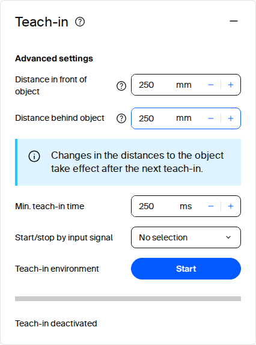

Editing field polygons¶
Field polygons in the picoScan100 Object Detection application can be changed through the web GUI, configuration import, REST, CoLa, or the SDK. Select the method that fits whether the change is an interactive adjustment, a repeatable deployment, or an application-driven update.
Web GUI¶
Open the Object Detection application in SOPASair to create and edit polygon points directly. This is the quickest method for commissioning and manual adjustments. The field editor also supports teach-in.

Field evaluation teach-in tile in SOPASair.
For bulk coordinate changes, open the Field settings dialog and select JSON in its footer toolbar. The editor switches from the coordinate table to a JSON text field. Paste the prepared polygon to replace all points at once:
{
"points": [
{ "x": -5, "y": 531 },
{ "x": 837, "y": 565 },
{ "x": 907, "y": -637 },
{ "x": 12, "y": -590 }
]
}
Configuration file import¶
Use the top-right SOPASair menu to download the complete configuration from a commissioned sensor. It includes field geometries and can be imported into another compatible device, making it suitable for repeatable commissioning and replacement devices. Keep a versioned, validated backup for each deployed configuration.
Programmatic updates¶
The REST API exposes SetFieldEvaluationContour to update a polygon. Create and configure the evaluation slot before setting its contour, then use GetFieldEvaluationContour to confirm the stored geometry. Persist the changes with WriteEeprom. See Field evaluation and distance API and the REST client example.
CoLa provides the same SetFieldEvaluationContour function through its telegram interface. Use it when the integration already uses CoLa, such as a PLC or legacy client; see CoLa.
The sick_perception_sdk uses the REST interface and provides an application-level option for changing contours. See the object-detection example.